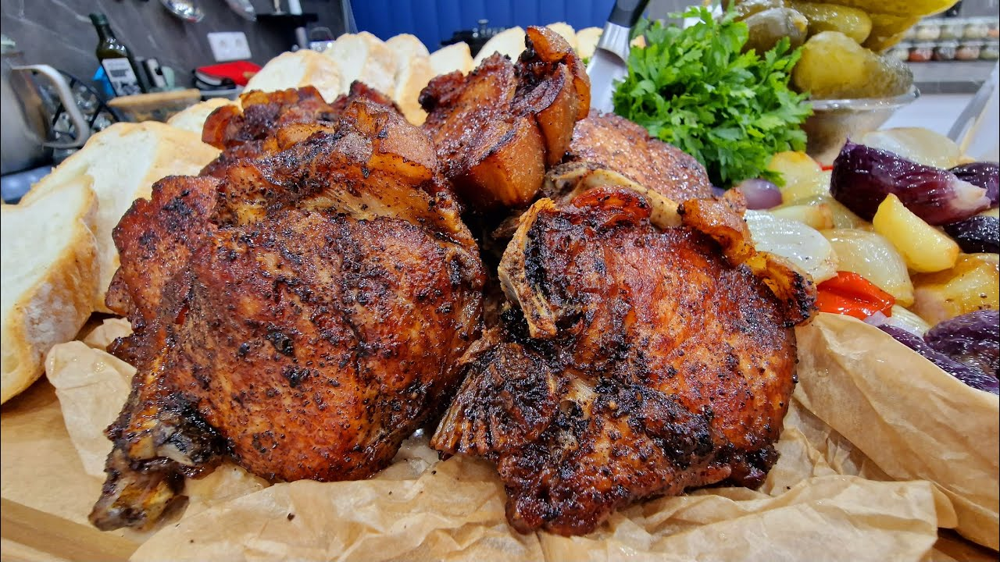

Hozzávalók
- 1900 g csontos bőrös sertéskaraj (11 szelet)
- 300 g vöröshagyma
- 300 g lilahagyma
- 400 g gyöngyhagyma
- 1 egész fej fokhagyma
- 6 darab bugaci erőspaprika
- 1 liter hideg víz ~ hozzátéve 1 evőkanál erdélyi durva só
- tört színes bors
- só ízlés szerint a húsok ízesítéséhez
- 1.5 kg sertészsír a sütéshez
- 1 kiscsokor petrezselyem
Elkészítés
- Mosd meg és szeleteld fel megfelelően a hagymafajtákat és a paprikát.
- Fűszerezd meg a sertéskaraj szeleteket tört színes borssal és sóval ízlés szerint.
- Készítsd elő a sertészsírt a sütéshez.
- Forralj fel vizet és oldj fel benne 1 evőkanál erdélyi durva sót.
- Öntsd le a sertéskarajokat a forró vízzel, majd hagyd állni 5-10 percig. Ez segít a hús tisztításában és előkészítésében.
- Szűrd le a sertéskarajokat, majd szárítsd meg őket papírtörlővel.
- Melegítsd fel a sertészsírt egy nagy serpenyőben közepes lángon.
- Süsd meg a sertéskarajokat mindkét oldalon, amíg aranybarnák és ropogósak nem lesznek. Ez több adagban is történhet.
- Tedd félre a sült sertéskarajokat.
- Az üres serpenyőben pirítsd meg a vágott hagymaféléket és paprikát, amíg aranybarnák és puhák nem lesznek.
- Adj hozzá tört színes borsot és sót az ízlésednek megfelelően.
- Tedd vissza a sült sertéskarajokat a serpenyőbe a pirított hagymafélékre.
- Párold még néhány percig az összetevőket együtt.
- Szórd meg a tetejüket friss petrezselyemmel, majd tálald.
Jó étvágyat!

{kind=link}